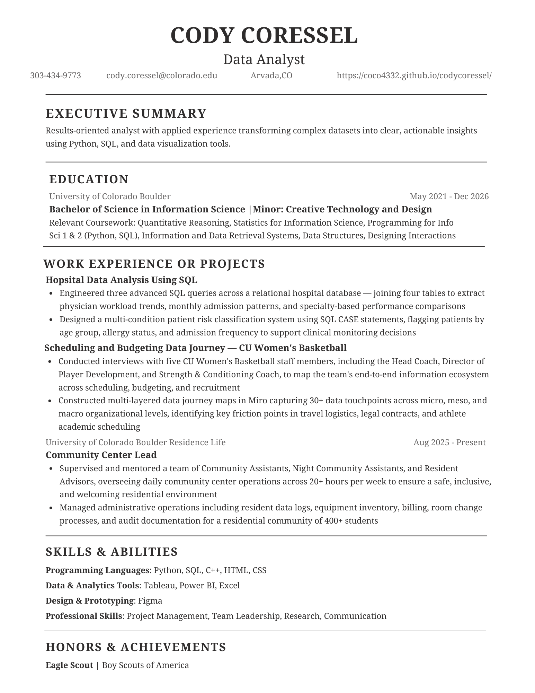

02 — Resume
On paper.

Ready to download.
My resume highlights my education at CU Boulder, technical skills in SQL, Python, and data visualization tools, and my leadership experience as an Eagle Scout.
03 — Projects
Selected work.
Excel · Data Analysis
Colorado State Parks Visitation Analysis
Multi-sheet Excel workbook analyzing visitation trends across 42 Colorado state parks from 2018–2023, featuring pivot tables, formulas, and a full dashboard.
Power BI · Dashboard
Global Data Breaches & Cybersecurity Analysis
3-page Power BI report analyzing the world's biggest data breaches using the Stakeholder → Task → Business Question method, with interactive dashboards for three distinct stakeholders.
SQL · Database Analysis
Hospital Database Analysis
Advanced SQL queries across a relational hospital database to extract physician workload trends, patient risk classifications, and specialty-based performance comparisons.
Big Data · Sentiment Analysis
AI Relationships on Reddit — Sentiment Analysis
Big data analysis exploring how sentiment toward AI relationships has evolved across Reddit, using VADER sentiment scoring, BigQuery SQL, and Tableau visualizations.
Python · Elasticsearch
National Parks Web Scraping & Search Engine
Built a full-text search engine for National Park Service content by scraping NPS.gov, ingesting data into Elasticsearch with custom analyzers, and running advanced queries.
Data Journey · Stakeholder Research
CU Women's Basketball Data Journey
Conducted stakeholder interviews with 5 CU Women's Basketball staff members and mapped 30+ data touchpoints across scheduling, budgeting, and recruitment workflows.
Tableau · Survey Research
AI in Media — Student Perception Survey
Designed, distributed, and analyzed a survey on CU Boulder students' perceptions of AI-generated media content, with findings visualized in Tableau dashboards.
Excel · Data Analysis
Colorado State Parks Visitation Analysis
A comprehensive Excel workbook analyzing visitation patterns across all 42 Colorado state parks over six years.
The Goal
Analyze Colorado state park visitation data from 2018–2023 to uncover trends, identify the impact of COVID-19 on outdoor recreation, and demonstrate proficiency with Excel Tables, Pivot Tables, advanced formulas, and data visualization.
What I Contributed
- Built a structured raw data table for 42 parks with visitation figures, acreage, park type, region, camping capacity, and water access
- Created three pivot-style summary tables using SUMIFS formulas: regional totals, top 10 parks, and year-over-year growth rates
- Designed a dashboard with four charts: statewide trend line, regional comparison bars, park type distribution, and top 5 parks
- Developed a Formulas & Analysis sheet with KPI cards, calculated metrics (visitors/acre, 5-year growth, COVID impact), and a VLOOKUP lookup tool
Skills Gained
- Advanced Excel: SUMIFS, INDEX/MATCH, RANK, nested IF, VLOOKUP, conditional formatting
- Data storytelling — finding the COVID-era visitation spike narrative in raw numbers
- Dashboard design — choosing the right chart type for each business question
- Professional formatting and workbook organization


Power BI · Dashboard
Global Data Breaches & Cybersecurity Analysis
A 3-page Power BI report built using Jon's "Rock Star" Data Viz Method — Stakeholder → Task → Business Question.
The Goal
Analyze the world's biggest data breaches and hacks to provide actionable insights for three distinct stakeholders at a cybersecurity consulting firm: a CISO assessing the threat landscape, a VP of Sales targeting new clients, and a Compliance Officer monitoring data sensitivity risks.
What I Contributed
- Mapped out stakeholders, tasks, and business questions using the Rock Star Data Viz Method before building any visuals
- Cleaned and transformed raw CSV data in Power Query — fixed data types, removed metadata rows, created calculated columns
- Built custom DAX measures including Most Breached Sector, Fastest Growing Sector, Most Exposed Data Type, and High Sensitivity Breach counts
- Designed three interactive report pages with KPI cards, line/bar/scatter charts, treemaps, donut charts, heatmap matrices, and detail tables with conditional formatting
- Added cross-filtering slicers for year, sector, method, and data sensitivity across all pages
Skills Gained
- Power BI: DAX measures (SUMMARIZE, TOPN, ADDCOLUMNS, SWITCH), Power Query data transformation, conditional formatting
- Stakeholder-driven design — building reports that answer specific business questions for specific people
- Data cleaning — handling messy CSV files with description rows, text-as-numbers, and inconsistent formatting
- Analytical thinking — defining what "high sensitivity" means and defending that threshold


{kind=link}
04 — Contact
Let's connect.
I'm currently looking for data analytics internships. Whether you have an opportunity, a question, or just want to say hello. I'd love to hear from you.